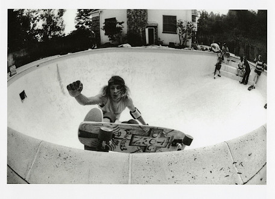

 Skateboarding narodził się w latach czterdziestych XX wieku w Kalifornii i miał swoje korzenie w surfingu – początkowo nazywano ten sport "chodnikowym surfingiem". Skateboarding był często uprawiany przez surferów gdy nie było odpowiedniej pogody do surfingu. Za najbardziej zasłużonych dla początkowego rozwoju skateboardingu uważa się grupę Z-Boys z Venice Beach w Kalifornii, która w latach 70. XX w. zrewolucjonizowała skateboarding wprowadzając technikę jazdy o nazwie "surf style". Dominujący uprzednio styl jazdy miał więcej wspólnego z gimnastyką, niż surfingiem czy współczesnym skateboardingiem.
Skateboarding nie byłby możliwy bez szeregu innowacji technicznych, takich jak zastąpienie w połowie lat siedemdziesiątych kółek stalowych poliuretanowymi, co znacznie zwiększało komfort jazdy, lub wprowadzenie nowoczesnych desek i trucków. Pierwsi skaterzy, tacy jak Z-Boys, ćwiczyli w pustych basenach dzięki suszy panującej w Kalifornii w latach 70. XX wieku. Z czasem warunki jazdy w basenie zaczęto imitować budując tzw. rampy. Do najpopularniejszych kształtów należą rampy, na które wjeżdża się do samego końca, oraz mające kształt litery U half-pipe'y. Pomimo że w skateparkach są już ekstremalnie złożone tereny, half-pipe nadal jest rdzeniem zaawansowanego skateboardingu. Kurorty w górach mają własne half-pipy dla snowboarderów, podczas gdy skaterzy dzielą je z rolkarzami i rowerzystami BMX-ów.
Razem z ewolucją skateparków i jazdy na rampie, skateboarding uległ zmianom. Street skating, w którym występował stosunkowo niewielki wachlarz trików takich jak jazda na przednich/tylnych kółkach (nose manual/manual), obroty o 360°, skoki nad przeszkodami, skoki z jednej deski na drugą, około 1977 roku zyskał nowe oblicze dzięki pierwszemu trikowi skateboardingowemu z prawdziwego zdarzenia. Jego twórcą był Alan Ollie Gelfand, a trik nazywał się ollie pop (lub no hands aerial). Trik ten był wykonywany początkowo tylko na rampie. W 1981 r. Rodney Mullen wykonał jego wersję uliczną – na płaskim podłożu. Ollie polega na podskoku razem z deskorolką, a następnie wylądowaniu na ziemi. Z tego właśnie triku wywodzi się wiele innych popisów. Ich wspólną cechą jest wykonywanie za pomocą stóp. Polegają one m.in. na wykonywaniu skomplikowanych obrotów deską na ziemi lub w powietrzu. Triki na płaskim podłożu stosowane są także w vercie i innych dziedzinach skateboardingu.
Niektórzy znani skaterzy to: Tony Hawk (który swoim nazwiskiem firmuje serię gier komputerowych Tony Hawk's Pro Skater), Bam Margera, Eric Koston, Danny Way, Bob Burnquist, Rodney Mullen, Steve Caballero i Josh Kalis (który występował w wielu reklamach telewizyjnych promujących buty firmy DC Shoes). Hawk występował także na galach z nagrodami telewizji MTV.
Skateboarding jest sportem niebezpiecznym i dlatego był przez długi czas zwalczany.
Źródło Wikipedia
Ciakawe filmy o tematyce deskorolkowej
| Tytuł | Rok produkcji | Recenzja |
|---|---|---|
| The Search for Animal Chin | 1987 | skatevideo |
| Grind | 2003 | filmweb |
| Królowie Dogtown | 2005 | filmweb |
| Baker 3 | 2006 | skatevideo |
| Street Dreams | 2009 | filmweb |
| xD | xD | xD |